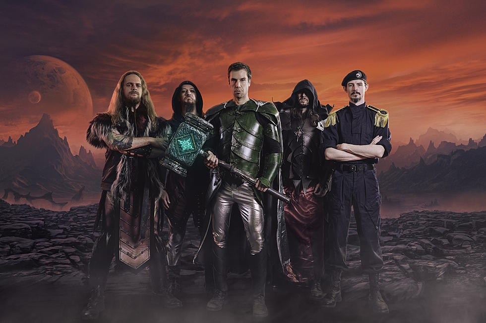
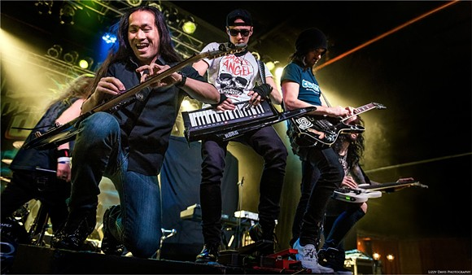

Power Metal
Influences
Power Metal traces its roots to one man. Ronnie James Dio. Dio set the stage for Power Metal's lyrical content with his band Rainbow, which concentrated on Medieval and Fantasy themes which would go on to be the themes of most major power metal bands.
Description
Power Metal is mostly characterized by it's speed and uplifting sound, contrasting the dark and dissonant sound in like every other type of metal. Power Metal bands, while using traditional heavy metal instruments, also incorporate a keyboard synthesizer in most cases. Power Metal vocalists use a clean voice in almost every case, utilizing a technique called 'Mixed Voice', where you mix your chest and head voice, to hit a high register and achieve powerful and operatic vocal styles. Power Metal is also notorious for it's fast and technically demanding guitar solos.
To foil the light and upbeat sound of the instruments, the lyrical themes of power metal are similar. Typically, power metal bands sing about mythology, fantasy and hope. Topics such as politics and religion are very, very rare in the world of power metal. Historical themes are also not unheard of.
Brief History
American Power Metal, which is characterized as having its roots in heavy metal, emerged in the early 1980s. Bands such as Jag Panzer and Manowar took heavy metal and gave it high register operatic vocals along with focusing on guitar leads.
After American Power Metal's sharp fall off in the late 80s, European (or Epic) Power Metal would emerge in Europe. European Power Metal is derived much more from speed metal than it is from Heavy Metal. Helloween's 1987 and 1988 albums "Keeper of the Seven Keys" Parts One and Two are considered the first true European Power Metal albums, with bands such as Blind Guardian and Running Wild soon filling in with new elements such as the operatic vocals and the keyboards. European Power Metal has become the standard for power metal these days, with the American brand hardly played at all.
Examples
- Dragonforce
- Blind Guardian
- Sabaton
- Rhapsody of Fire
- HammerFall
- Gloryhammer
- Alestorm
- Helloween
- Running Wild
- Grave Digger
Subgenres and Regional Scenes
Major Subgenres
Epic Doom Metal is a subgenre that combines Doom Metal and Power Metal, most often with power metal derived vocals and doom metal derived riffs. Pioneered by Candlemass.
Symphonic Power Metal is a subgenre that combines Symphonic Metal and Power Metal, most often with keyboards and other power metal instrumentation in addition to the symphonic/orchestral rythyhm section commonly found in symphonic metal.